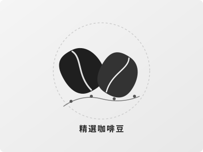
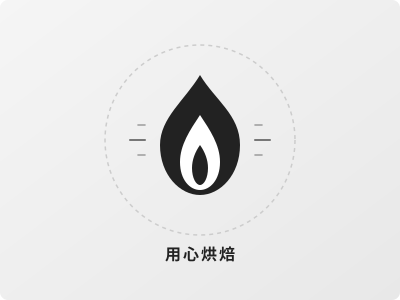
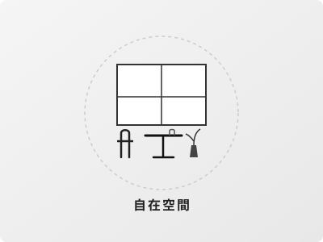

精選咖啡豆
嚴選全球產地莊園級生豆，經過嚴謹杯測檢驗，保留純淨果香與甘醇尾韻，呈現大自然的天然風味。
在繁忙奔波的都市日常中，小歪飲料致力於為您留下一方喘息與回味的角落。我們相信，一杯好的飲品不僅能撫慰味蕾，更能陪伴您沉澱思緒、找回生活的真實步調。從咖啡豆的嚴格挑選到細膩調配，我們專注於每一道工序的純粹，讓每一次啜飲都成為值得珍藏的片刻。
我們從豆源、烘焙至場域體驗，為您呈現簡潔而深刻的質感體驗。

嚴選全球產地莊園級生豆，經過嚴謹杯測檢驗，保留純淨果香與甘醇尾韻，呈現大自然的天然風味。

以小批次細火慢焙，根據氣候與豆性精確掌控烘焙曲線，淬鍊出乾淨、平衡且富有層次的風味細節。

融入黑白極簡與自然留白的美學概念，打造沉靜無壓的場域，讓人在寧靜中享受專屬的獨處時光。